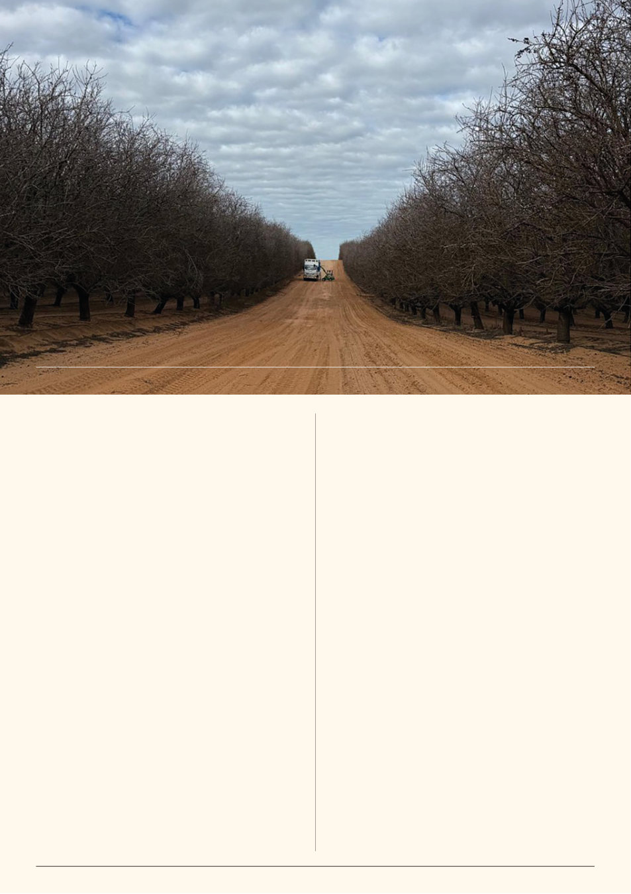

16 | Published since 1918 by the VAA – founded in 1892
As another almond pollination season draws to a close,
beekeepers are doing what we always do — loading trucks,
watching the weather, finding the next patch of flowers and
saying over the UHF, “have a safe one!”
The 2026 season has again reminded me just how quickly the
landscape around pollination is changing. Here in Victoria, we
experienced another delayed start to flowering, with significant
rainfall before and during bloom. Despite adequate winter chill,
explaining a second consecutive year with later almond bloom
isn’t necessarily straightforward. There were also concerns around
the overlap between Nonpareil and its pollinators.
Early reports I’m hearing, however, are of a good to very good
nut set. Time will tell.
From a beekeeper’s perspective, the general quality of
Victorian bees has ranged from good to excellent.
Victorian colonies that went into autumn with a strong nutritional
profile and wintered well in the Mallee on a host of weeds after all
the pre-winter rain have generally presented particularly strongly.
Almonds themselves have provided good stimulation. Colonies
have bred well, there has been useful nectar coming in and,
in general, many bees are leaving the orchards in great shape.
There is a lesson in that. The allure of low-nutrition autumn
flows can be tempting, but it often catches up with us at almonds.
We all know you cannot manufacture a genuinely strong pollination
colony in the fortnight before delivery.
And now varroa has added another layer to that preparation.
Some Victorian mites have already been confirmed resistant to
both major synthetic miticide groups.1 The beekeeper delivering
a strong colony today isn’t simply feeding and breeding bees.
We are monitoring, treating, recording, checking treatment
efficacy and increasingly working within an integrated pest
management program.2 Those costs are real.
There has been plenty of discussion about pollination pricing.
Personally, I think some of the adjustment we’re seeing is simply
a correction towards the true cost of keeping the pollinator alive.
Labour costs more. Trucks cost more. Treatments cost more.
Monitoring takes time. Chasing nutrition and forgoing autumn
honey costs money. Queen replacement costs money. And a
treatment that fails because of resistance can cost considerably
more than the product sitting inside the hive.
At the same time, frame-based pricing is creating a clearer
financial reward for quality. I support that principle.
A beekeeper delivering genuinely strong colonies should be
rewarded for the additional bees being placed into the orchard
and hitting the stocking rates required. But it also makes accurate
auditing more important than ever.
I’ve heard too many reports this season of beekeepers
disagreeing substantially with third-party audit results. I’m clearly
not alone.
AHBIC has publicly raised concerns regarding hive audits where
reported colony strength has not aligned with what beekeepers
believe they supplied and has encouraged beekeepers to be
present during auditing where possible.
This matters. Growers deserve to receive what they have paid
for. Beekeepers deserve to be paid for what they have supplied.
And auditors need a transparent and repeatable system that gives
both sides confidence. As more dollars become attached to each
additional frame of bees, ambiguity is no longer good enough. The
balance has to be right.
There is another question worth asking as frame pricing
continues to develop: When stronger colonies create additional
value, where does that value ultimately land? Does it flow back
to the beekeeper carrying the increasing cost of producing and
A Changing Landscape
By Lindsay Callaway, Commercial Beekeeper
with Jana Hamilton, Commercial Beekeeper, Far North Queensland
Unloading the last drop at Lake Powell, by Lindsay Callaway
Almond
Pollination
2026
Bees in good shape
Quality starts months earlier
The new cost of keeping the pollinator alive
We need confidence in the audit
Where does the additional value go?